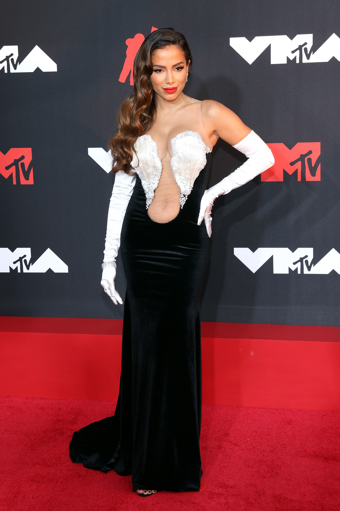

The VMA is the award show from MTV, The Video Music Award has its goal to award the best music videos of the past year,
the biggest award of the night is the "Video Of The Year", is presented by the cable channel MTV.
Originally conceived as an alternative to the Grammy Awards (in the video category), the annual MTV Video Music Awards ceremony has often been called the
"Super Bowl for youth", an acknowledgment of the VMA ceremony's ability to draw millions of youth from teens to 20-somethings each year. By 2001, the VMA had become a coveted
award.The statue given to winners is an astronaut on the moon, one of the earliest representations of MTV, and was colloquially called a "moonman". However,
in 2017, Chris McCarthy, the president of MTV, stated that the statue would be called a "Moon Person" from then on. The statue was conceived by Manhattan
Design—also designers of the original MTV logo—based on the 1981 "Top of the Hour" animation created by Fred Seibert,
produced by Alan Goodman, and produced by Buzz Potamkin at Buzzco Associates. The statue is now made by New York firm Society Awards. Since the 2006 ceremony,
viewers are able to vote for their favorite videos in all general categories by visiting MTV's website.
The annual VMA ceremony occurs before the end of summer and held either in late August or mid-September, and broadcast live on MTV, along with a "roadblock"
simulcast across MTV's sister networks since 2014, which is utilized to maximize the ceremony's ratings. The first VMA ceremony was held in 1984 at New York City's
Radio City Music Hall. The ceremonies are normally held in either New York City or Los Angeles. However, the ceremonies have also been hosted in Miami and Las
Vegas. The 2019 MTV Video Music Awards took place on August 26, 2019, in Newark for the first time.
The Washington Post and HuffPost stated that the stature of the ceremony had declined by 2019. HuffPost cited reasons such as a lack of interest
(declining attendances and viewership: in 2019 ratings hit an all-time low for the third straight year), lack of musical diversity, lack of celebrity,
lack of credibility, and access to music online.The Washington Post states, "The moment the VMAs ceased to matter might have happened in 2014, when Drake
didn't bother appearing to receive his award. Or maybe it was even earlier than that: The Associated Press compared the energy of the VMAs to the scripted
reality-TV show Cribs all the way back in 2006".MTV has also faced criticism for devoting most of its airtime outside the VMAs to reality shows and dramas,
with music videos mainly airing in off-peak graveyard slots to suffice the minimum amount of music programming in the network's carriage agreements.

the first MTV Video Music Awards was in 1984, Madonna performed her hit "Like a Virgin" wearing a combination bustier/wedding gown, including her trademark "Boy Toy"
belt. During the performance, she rolled around on the floor, revealing lace stockings and a garter.Cyndi Lauper spoke in "Exorcist-esque gibberish" to
explain the VMA rules right before winning the Best Female video for "Girls Just Want to Have Fun". David Bowie, the Beatles and director Richard Lester were
rewarded with the first ever Video Vanguard Awards for their work in pioneering the music video. The Cars' "You Might Think" won the very first video of the year,
beating out Michael Jackson's "Thriller" and Herbie Hancock's "Rockit".
The first brazzilian artist ever to go and perform at the AMA was the singer Anitta, this years VMA she is not just performing but she's is nominated, making her the first solo brazzilian artist to do it so, she's nominated in the category Best Latin with her hit "Envolver". The brazzilia actress, singer, dancer Anny Gabrielly was the first brazzilian nominated, with her musical group, Now United. Anitta performed the song canção "Girl from Rio" in a Burger's comercial, during a break of the show, which was only exhibited in the USA.
Back To The Beginning